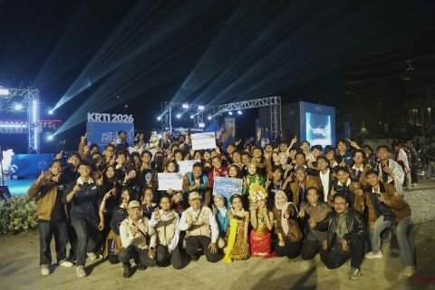

2026 · Nasional
Juara Umum KRTI 2026 & Juara Harapan 1 Divisi Technology Development
Kontes Robot Terbang Indonesia di Ibu Kota Nusantara & ITK, September 2026. Bayucaraka ITS menjadi juara umum, dengan flight controller custom rancangan saya terpasang di pesawat tim.
Baca di ITS News ↗